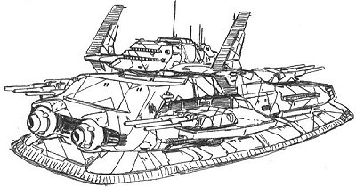
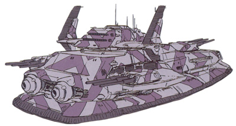

| Big Tray Heavy Assault Earth Federation Land Battleship |
|
|  | |
General and Technical Data |
|
|
Unit type: Big Tray Unit type: land battleship Operator: Earth Federation Construction: Titanium Alloy Propulsion: air cushion Hangar capacity: 3 infantry; 24 vehicle; 5 mobile suits Launch catapults: 0 Fixed armaments: 2 x fixed mega particle cannon; 3 x 3-barrel cannon turret  Alternate colorschemes |
 RPG quick stats sheet
RPG quick stats sheet | Technical and Historical Notes | |
|
As with many Federal non-mobile suit units, the Big Tray land battleship utilizes plenty of old technology. However, unlike the majority of said units, the Big Tray is a force to be reckoned with on the modern mobile suit battlefield.
Unlike Zeon's Dobay, which is, by all regards and classifications, a giant tank, the Big Tray is propelled by an air cushion under its body, something like that of a twentieth century LCAC. Though it is quite heavy, the Big Tray is fully capable of amphibious operations, and is quite mobile for a unit of its size. Though it isn't very fast, it can navigate tough terrain easily. The Big Tray is intended for heavy attack; as such, it is armed primarily with large, powerful weapons. Two giant mega particle cannons are mounted on the Big Tray's front, designed for use against large land targets. Three triple-barreled cannons (modeled something after a battleship turret) are spread evenly across its hull, giving it very few blind spots. In a worst case scenario, the Big Tray can always simply crush anything trying to sneak up on it. Though it is primarily a fire support unit or utilized as a forward command post, the Big Tray carries two squadrons of aircraft and a handful of mobile suits inside its hangar below the rear turret. Much as with the Dobay, these take time to deploy, however, due to the cramped space. |
|